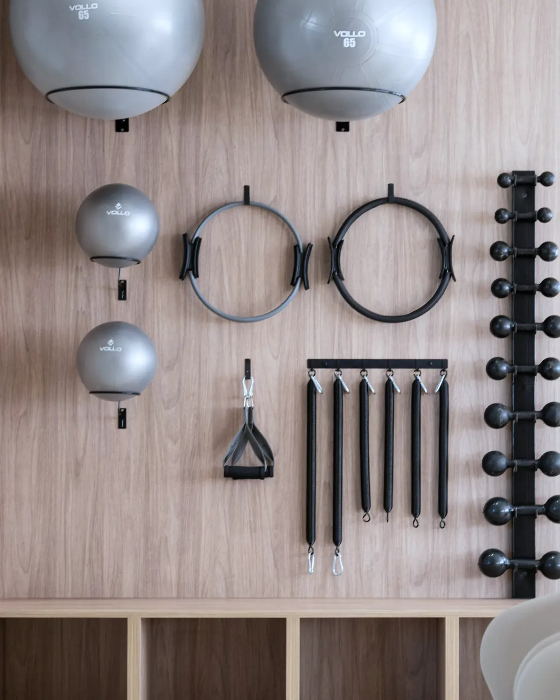
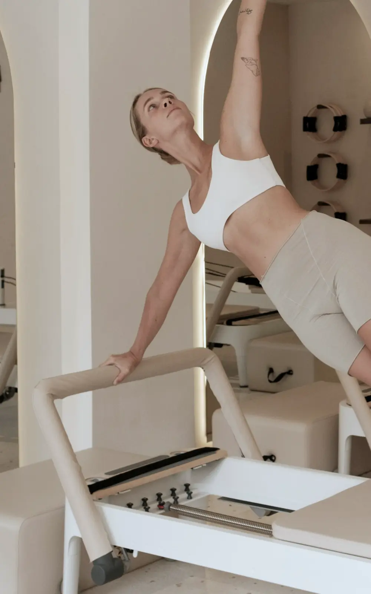
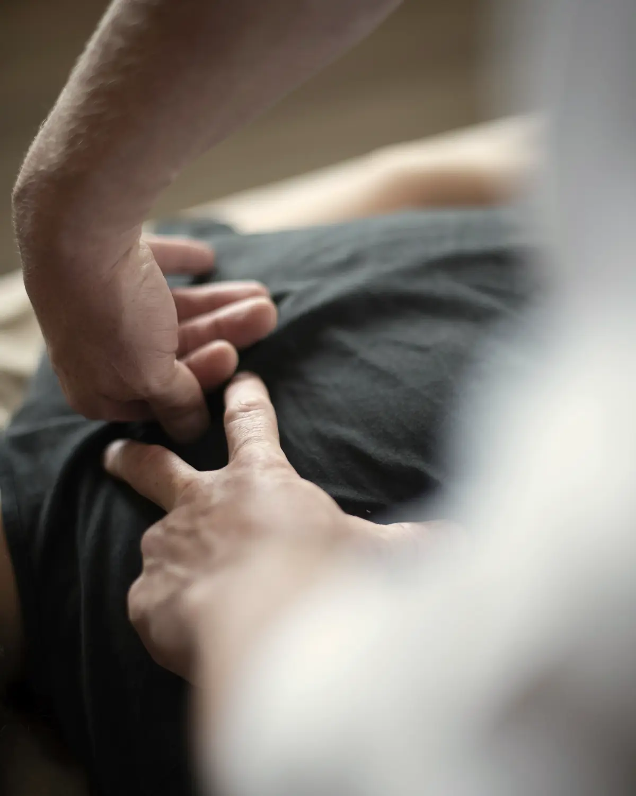
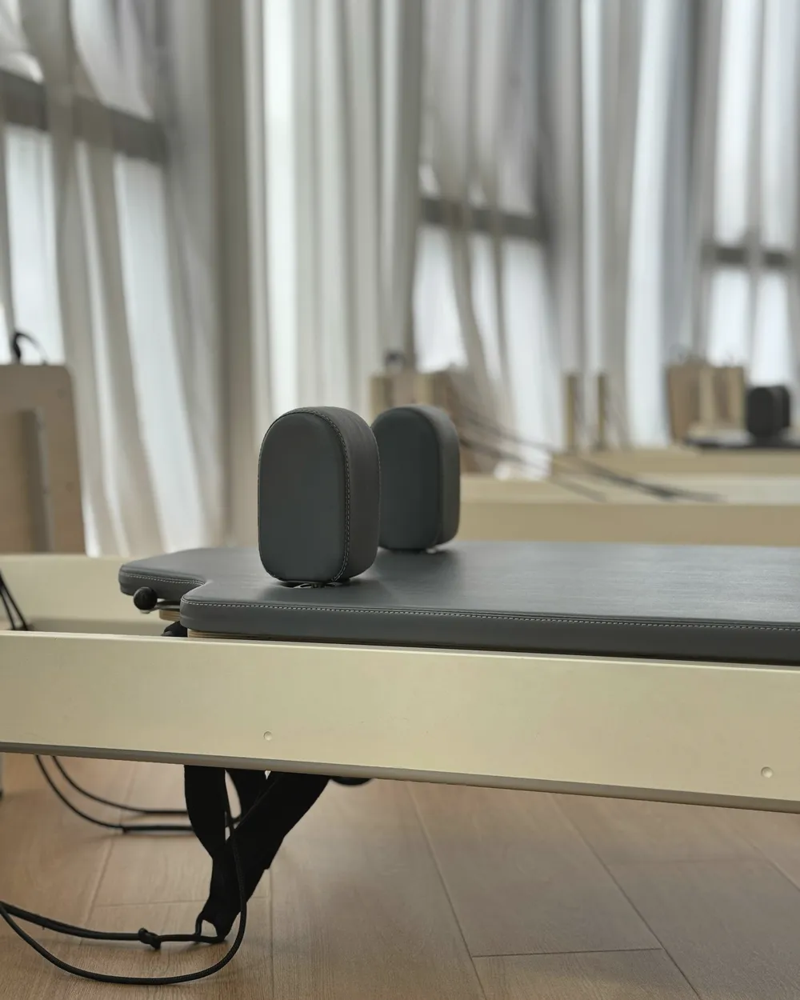

01
Pilates em aparelhos
Aulas com aparelhos novos e o Rafael acompanhando cada exercício. Serve para quem quer sair da dor e para quem quer manter o corpo em dia por muitos anos.
Demonstração feita para Rafael Stima Pilates e Fisioterapia. Ainda não é o site oficial.

Marechal Rondon · Canoas
Pilates e Fisioterapia
Pilates acompanhado de perto e fisioterapia para dores na coluna, na cervical e no joelho. No Edifício La Torre, com horário marcado pelo WhatsApp.
5,0 no Google · 66 avaliaçõesTratamentos
O Rafael junta Pilates, fisioterapia e terapias manuais num atendimento personalizado, de acordo com a necessidade de cada paciente.

01
Aulas com aparelhos novos e o Rafael acompanhando cada exercício. Serve para quem quer sair da dor e para quem quer manter o corpo em dia por muitos anos.

02
Cada técnica entra quando faz sentido para o seu caso, com uma rotina de alongamentos para continuar o cuidado no dia a dia.
Por que as pessoas procuram o Rafael

Tem aluno que faz Pilates com o Rafa há 10 anos. E paciente que se cuida com ele há 14.
Contado nas avaliações do Google
“Há muitos anos faço Pilates com o Rafael, quando procurei os médicos falavam em cirurgia, não fiz. Hoje me mantenho fazendo Pilates de 2 a 3 vezes por semana.”
Ana Maria M.
“Cheguei com muitas dores de cabeça e até náuseas. Fui muito bem atendida, e consegui sair inicialmente com mais de 50% de alívio.”
Inez S.
“O Rafael é ótimo, super dedicado, dá atenção aos pacientes, acompanha os exercícios. A melhora é nítida nos primeiros dias de tratamento.”
Julio G.
“Fui paciente dele por mais ou menos 10 meses e já nos primeiros meses minha dor na cervical praticamente sumiu!”
Wagner G.
“Rafael além de ser um ótimo professor de Pilates me ajudou muito com a fisioterapia para melhorar dores que tinha nas costas e joelho.”
Rogerio Z.
“Já fiz fisioterapia pós cirurgia no joelho, quando minha recuperação foi muito rápida, e também pilates.”
Matheus R.
“Ideal para quem busca o Pilates visando recuperação e redução de dores, mas também busca a qualidade de vida na prática de atividades físicas.”
Giulia P.
Onde fica
Sala 601, na Av. Inconfidência, 650, Marechal Rondon, Canoas. O atendimento é com hora marcada: mande uma mensagem e combine o melhor horário.
Recado de quem fez esta página
Sou o Conrado Lemos, desenvolvedor aqui de Canoas. Montei esta página para mostrar como ficaria o seu site. Tudo acima é o que o aluno e o paciente veriam.
R$ 1.000, com o site no ar em até 3 dias, no seu próprio endereço. O pagamento é só na entrega, depois da sua aprovação. O domínio é à parte, cerca de R$ 40 a R$ 55 por ano.
Gostou? É só responder a minha mensagem no WhatsApp.